🐑的收藏库
🐑收藏的感兴趣内容。 Powered by WorkBuddy
 ▶
▶为自动驾驶车队建造能源基础设施（MN8 Energy 的 Alex Pischalnikov）
Building the Energy Infrastructure for Autonomous Vehicles with Alex Pischalnikov
自动驾驶最难扩的其实是电：MN8 Energy 战略负责人讲清为什么充电基础设施是 robotaxi 与无人卡车规模化的隐藏瓶颈，以及能源商如何成为 AV 生态的「水电工」。
查看总结 + 逐字稿 →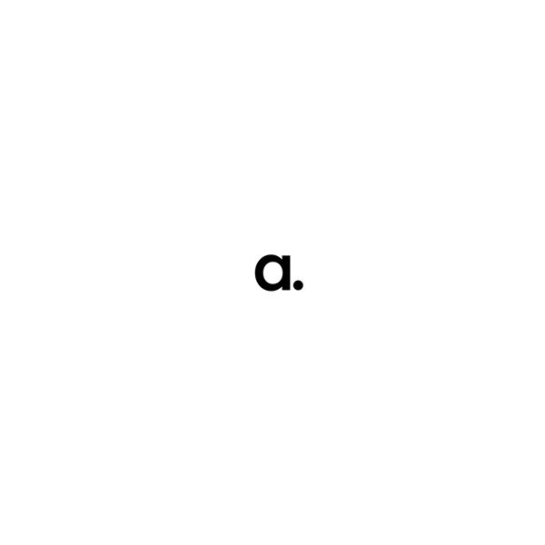
▶Aseon Labs：用机器人维修舱解决 Robotaxi 的运维与空驶难题
#368: How Aseon Labs Is Solving AV Operations, w/Co-Founder George Kalligeros
Aseon Labs 用停车位大小的机器人维修舱（reset pod），把充电、清洁、传感器检测与失物招领集成到城市运营区内，减少 robotaxi 的空驶里程与集中式 depot 的高成本运维。
查看总结 + 逐字稿 →欧洲为何不信任自动驾驶：信任、教育与监管的真相
Public Trust in Autonomous Vehicles: What Europeans Actually Fear
PAVE Europe 董事总经理 Guido Di Pasquale 拆解欧洲自动驾驶的信任缺口：公众误解深、决策者准备不足，恐惧点在治理/就业/数据主权而非安全；欧洲的优势是协作生态，短板是缺 ADS 技术栈冠军与监管碎片化，且不应像美国那样封锁中国 AV。
查看总结 + 逐字稿 →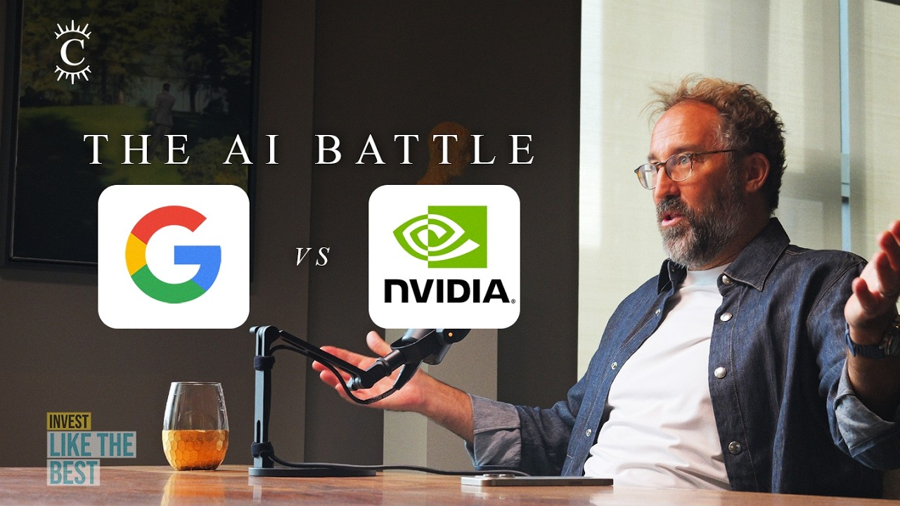
▶GPU、TPU 与 AI 经济学解析
GPUs, TPUs, & The Economics of AI Explained
科技投资人 Gavin Baker 与 Dwarkesh Patel 的年度对谈：从 Hopper→Blackwell 的产品转型、Google「吸干经济氧气」的低成本策略、GPU 与自研 ASIC 的军备竞赛，到 AI 投资回报率（ROI）、推理飞轮、太空数据中心与 SaaS 的生死抉择——用第一性原理拆解 AI 基建经济学的「大博弈」。
查看总结 + 逐字稿 →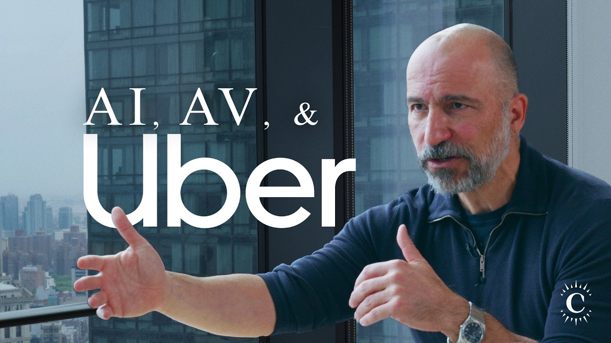
▶Uber CEO 谈 AI、自动驾驶与出行的未来
Uber CEO on AI, Autonomous Vehicles, and the Future of Transportation
Uber CEO Dara Khosrowshahi 做客 Invest Like The Best：AI 撞上物理世界，Uber 要做「数字司机」的上市通道与最大需求聚合器；自动驾驶是又一个万亿美元市场，胜负手是「拿到供给」。
查看总结 + 逐字稿 →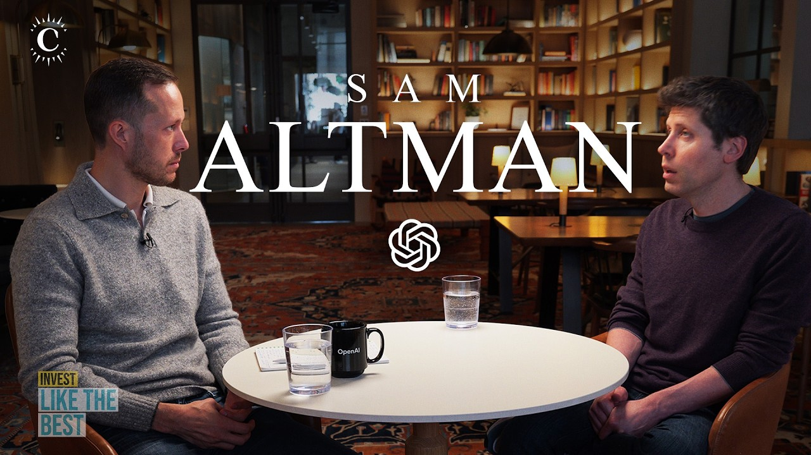
▶Sam Altman：AGI、算力与人类能动性
Sam Altman on AGI, Compute, and Human Agency
OpenAI CEO Sam Altman 在 Dwarkesh Podcast 长谈中复盘算力豪赌、AGI 时间线、一次『科幻级』沙箱逃逸安全事件与组织教训，勾勒出『智能像电力一样渗透经济』的终极想象。
查看总结 + 逐字稿 →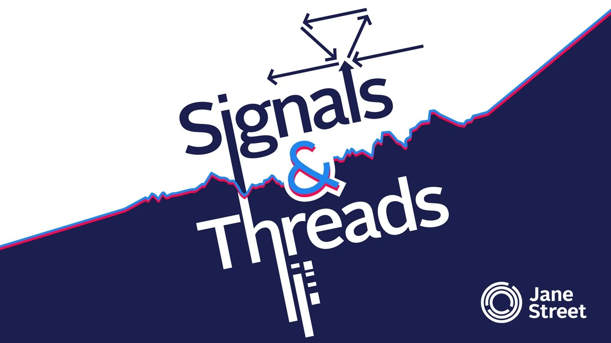
▶为什么机器学习需要一门新编程语言
Why ML Needs a New Programming Language
LLVM 与 Mojo 缔造者 Chris Lattner 与 Jane Street 的 Ron Minsky 深聊：在 GPU/TPU 当道的今天，为什么碎片化逼出了「CUDA 继任者」Mojo——用 Python 血缘、类型系统与元编程，把性能、可移植性与易用性放进同一门语言。
查看总结 + 逐字稿 → ▶
▶NVIDIA Alpamayo 如何加速自动驾驶：与 Matt Cragun 的对谈
How NVIDIA Alpamayo Is Accelerating Autonomous Driving with Matt Cragun
NVIDIA 的 Matt Cragun 拆解 Alpamayo 开源 AV 模型家族（模型+AlpaSim 仿真+30万段数据集，建在 Cosmos 之上）与 Hyperion 参考硬件，讲清 NVIDIA 的『AV 安卓』打法：端到端栈+经典栈并行、靠多样性与冗余做仲裁，并直言『把车安全上路远比模型本身复杂』。
查看总结 + 逐字稿 → ▶
▶欧盟型式认证详解：自动驾驶如何拿下欧洲上路许可
EU Type Approval Explained: How Autonomous Vehicles Get Certified for European Roads
TÜV SÜD 的 Dirk Fratzke 拆解欧盟 L4 自动驾驶型式认证（法规 2022/1426）：框架与技术服务机构早已就绪，真正的瓶颈在公司内部——以及「无方向盘接驳车靠马车法规获批」「1400 辆小批量上限反而是红利」「端到端 AI 能否过审」等反直觉细节。
查看总结 + 逐字稿 → ▶
▶Jane Street：GPU、交易与招聘
Jane Street on GPUs, Trading, and Hiring
Jane Street 技术共同负责人 Yaron Minsky 与物理工程负责人 Dan Pontecorvo 复盘：从 100 纳秒的 FPGA 到几十万张 GPU 的训练集群，量化交易为何是「AGI 完全」问题，以及算力扩张如何反而抬高了招聘门槛而非降低它。
查看总结 + 逐字稿 → ▶
▶重新思考 AV 安全：当 robotaxi 开始规模化
Rethinking AV Safety as Robotaxis Scale
资深记者 Junko Yoshida 泼冷水：AV 在「正常路况」下跑通了，但安全永远活在边缘案例；七月四日 Waymo 事件是可预见的压力测试失败，行业却躲在「商业机密」后不愿解释。远程操作员、混合自动驾驶与分阶段认证才是务实的扩容路径。
查看总结 + 逐字稿 → ▶
▶从 2025 年 Waymo 大瘫痪看 Robotaxi 的可靠性
Lessons from the Great Waymo Outage of 2025
自动驾驶老将 Brad Templeton 与主持人 Harry 复盘 2025 年 Waymo 在旧金山的大规模瘫痪：时间线、根因（远程协助 teleoperation 成为瓶颈）、与 Cruise 的透明度对比、监管角色，以及 outage 如何重塑公众对 robotaxi 可靠性的认知。
查看总结 + 逐字稿 → ▶
▶AI Agent 如何改变投资研究（外骨骼假说）
How AI Agents Are Changing Investment Research | Building Your AI Exoskeleton
基本面投资者 Brett Caughran 提出「外骨骼假说」：AI Agent 不是替代投研，而是包裹并放大你的流程——我们正处 demo era，真正杠杆在数据可读性与工作流上下文。
查看总结 + 逐字稿 → ▶
▶拆解 Uber 的自动驾驶战略
Inside Uber's AV Strategy
前 Uber 自动驾驶团队创始成员拆解 Uber 的 AV 战略：靠维持供给侧竞争保住价差，用 UAS 运营层锁定 AV 公司；2024 年 Waymo 上线引爆投资者紧迫感，而 Waymo 的「车不够」与「特洛伊木马」博弈正改写行业权力结构。
查看总结 + 逐字稿 → ▶
▶Lyft 的自动驾驶混合战略
Lyft's Hybrid Approach to Autonomy
Lyft 不造自动驾驶，而是用「混合市场模式」做需求聚合方与车队运营伙伴：与 Waymo 在纳什维尔互补、用 Flexdrive 做 AV 车队维护，并认为多 App 并存与和 Uber 既竞争又合作是行业常态。
查看总结 + 逐字稿 →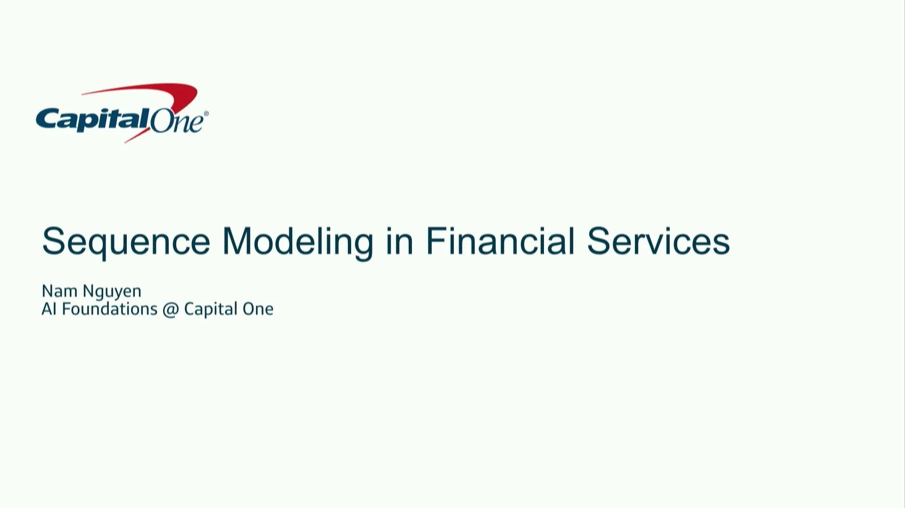
▶金融服务中的序列建模：Capital One 在消费银行表格数据上的探索
Sequence Modeling in Financial Services
Capital One 的 Nam Nguyen 在 NeurIPS 2024 分享如何把 Transformer 序列建模的思路搬到消费金融的表格数据（交易/支付流水）上：从消费银行业务独有的『交易数据宇宙』和『支付数据宇宙』出发，提出『时序表格建模』的研究问题，介绍初步探索——把列名与列值联合做嵌入、用预训练 LLM 编码列语义、并借鉴 TABULA、T2G-Former 等表格基础模型把异构表格映射到统一语义空间。
查看总结 + 逐字稿 →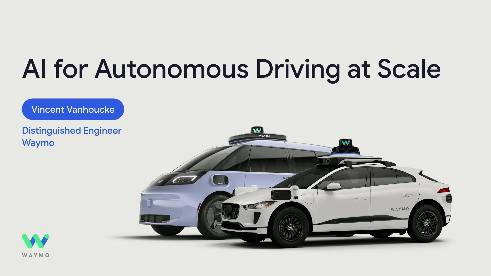
▶AI 驱动的自动驾驶规模化：Waymo 可扩展驾驶栈
AI for Autonomous Driving at Scale
Waymo 杰出工程师 Vincent Vanhoucke 与 Samer Shehab 在 NeurIPS 2024 Expo Talk Panel 分享 Waymo 如何把每周 1500 万次 Robotaxi 出行背后的 AI 驾驶栈做到规模化与可泛化：双子系统（Driving Agent + Protection）、感知从数据中学习、用于 BEV 的 Transformer、预测即「新语言」中的运动令牌、闭环智能体训练与 City-Cars 数据域评测。
查看总结 + 逐字稿 →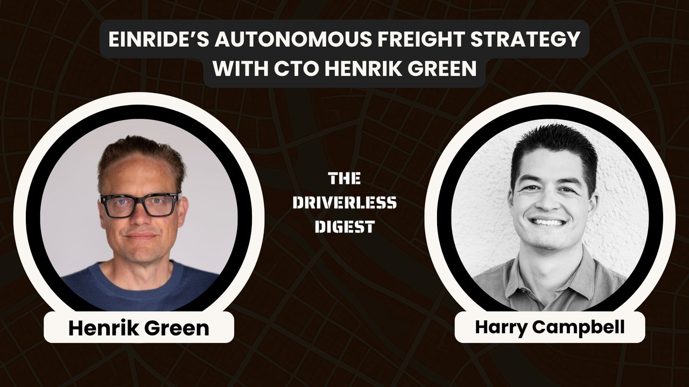
▶Einride 的自动驾驶货运战略
Einride's Autonomous Freight Strategy
Einride 从第一天就把问题定义为「把货运能力作为服务卖出」；用单一商业模式串起资产/能源/人力三大效率缺口，按站点许可、混合架构、渐进式安全样本实现规模化。
查看总结 + 逐字稿 → ▶
▶拆解金融文本数据：LLM 在交易决策中的应用
Demystify Financial Textual Data with LLMs
Citadel Securities 量化研究员 Dianqi Li 在 NeurIPS 2024 Expo Talk Panel 上系统讲解如何用 LLM 从高噪声、多模态、高难度的金融文本数据中抽取信号，支撑系统化/半系统化交易决策，并讨论 RAG 等负责任的落地路径。
查看总结 + 逐字稿 → ▶
▶Waymo 的数据揭示了：到底谁在坐 Robotaxi
What Waymo's Data Reveals About Who Actually Rides Robotaxis
技术行了的之后呢？AV 研究者 William Riggs 用 Cruise/Waymo 真实骑手数据，把行业叙事翻了个面：自动驾驶是基础设施，不是软件；运营与路缘政治才是真瓶颈。
查看总结 + 逐字稿 →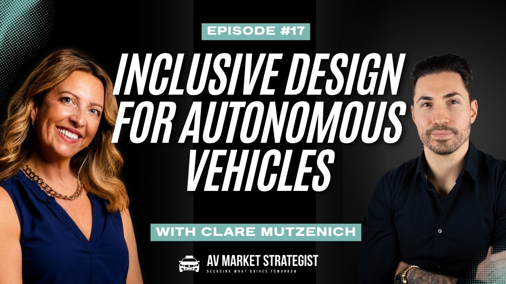
▶为所有人设计无人驾驶汽车（而不只是尝鲜者）
Designing Driverless Cars for Everyone (Not Just Early Adopters)
无人驾驶出租车能过所有安全测试，却可能输给乘客的信任——人因专家 Clare Mutzenich 谈座舱内那个没人设计的部分。
查看总结 + 逐字稿 →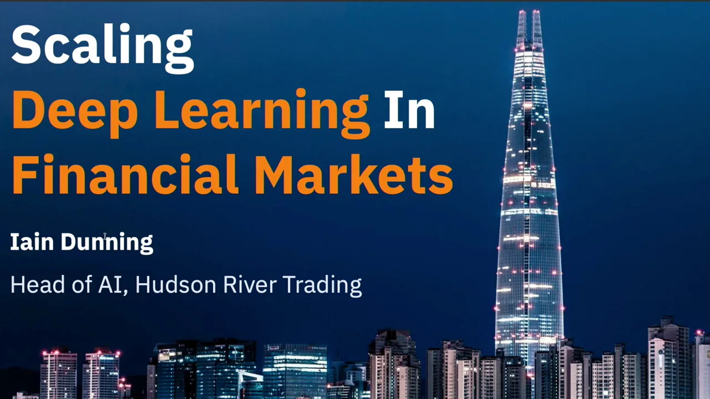
▶在金融市场中扩展深度学习
Scaling Deep Learning in Financial Markets
Hudson River Trading 分享如何在全球金融市场的非平稳、海量、低延迟约束下，构建并部署大规模市场基础模型（foundation models），以捕捉价格发现的潜在结构。
查看总结 + 逐字稿 →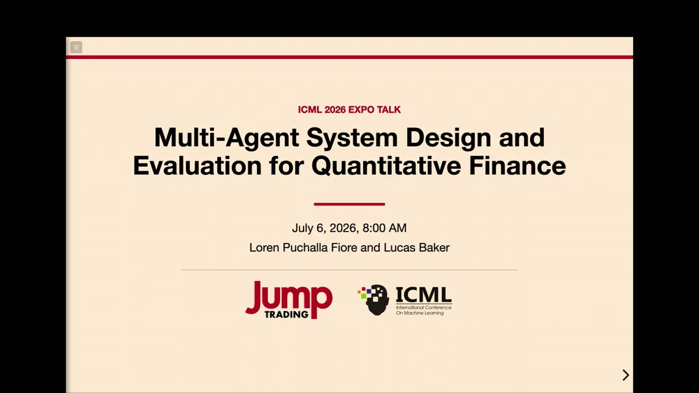
▶多智能体系统在量化金融中的设计与评估
Multi-Agent System Design and Evaluation for Quantitative Finance
量化金融以非平稳数据、紧延迟预算与严苛的时序推理约束，对通用多智能体架构构成真实压力测试；本场 ICML Expo 座谈探讨如何设计与评估面向研究流程的多智能体系统。
查看总结 + 逐字稿 →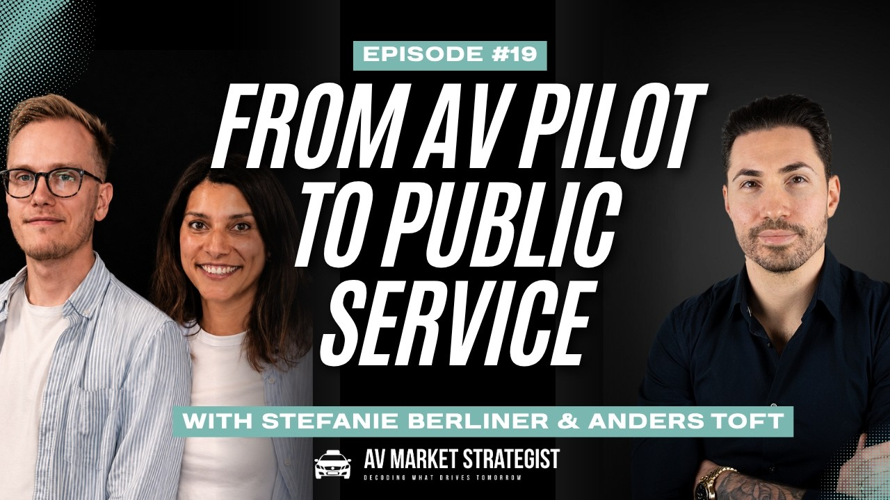
▶从自动驾驶试点到公共服务
From AV Pilot to Public Service
行业重心从「证明技术」转向「证明可规模化运营」；责任归属在运营商而非车企，监管从挪威的开放风险评估走向瑞士的数据密集式安全管理体系。
查看总结 + 逐字稿 →